傅立叶：任何连续的周期信号，可以由一组适当的正弦曲线组合而成。（Any univariate function can be rewritten as a weighted sum of sines and cosines of different frequencies.）
一个恰当的比喻是将傅立叶变换比作一个玻璃棱镜。棱镜是可以将光分解为不同颜色的物理仪器，每个成分的颜色由波长（或频率）来决定。傅立叶变换可以看作数学上的棱镜，将函数基于频率分解为不同的成分。当我们考虑时，讨论他的光谱或频率谱。同样，傅立叶变换使我们能通过频率成分来分析一个函数。
用一个例子解释一维傅立叶变换
我们一般描述一个函数都是基于时间域，如图所示表示了这个函数随时间变化的变化（x轴是时间的变化，y轴是（信号）强度的变化）。
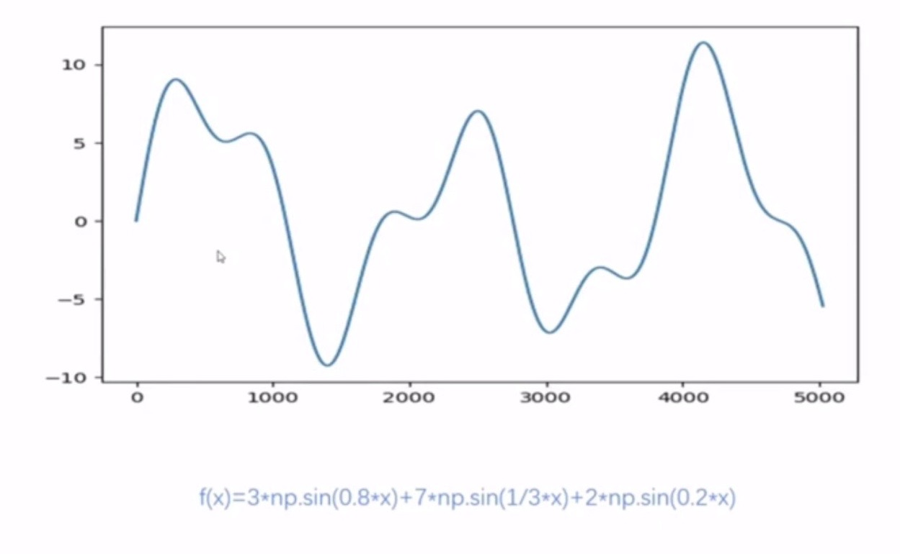
但是其实还有一种方法也可以描述这个函数，就是频率域。就比如上图中的函数可以写成
f(x) = 3sin(0.8x) + 7sin(0.3x) + 2sin(0.2x)
的形式。就是相当于给了频率为0.8, 0.3和0.2的sin函数不同的权重并把它们加起来。所以也可以由下图来表示。
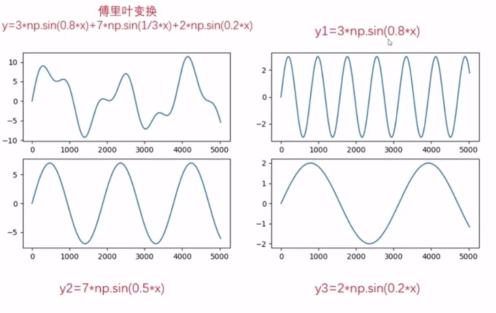
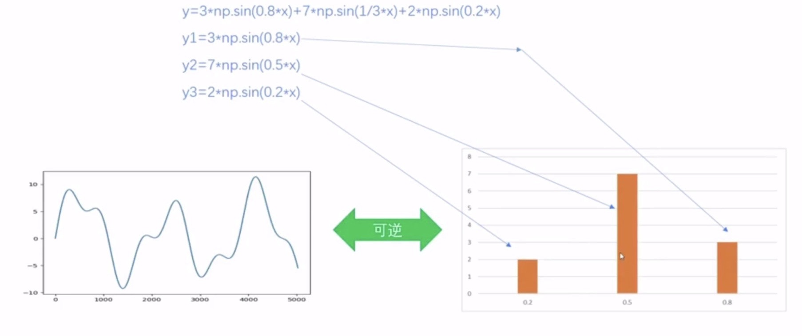
虽然两张图看起来截然不同，但是他们表述的是同种东西，而傅立叶变换就是描述这种从时域到频率域的变换。
当然也要考虑相位的变化。
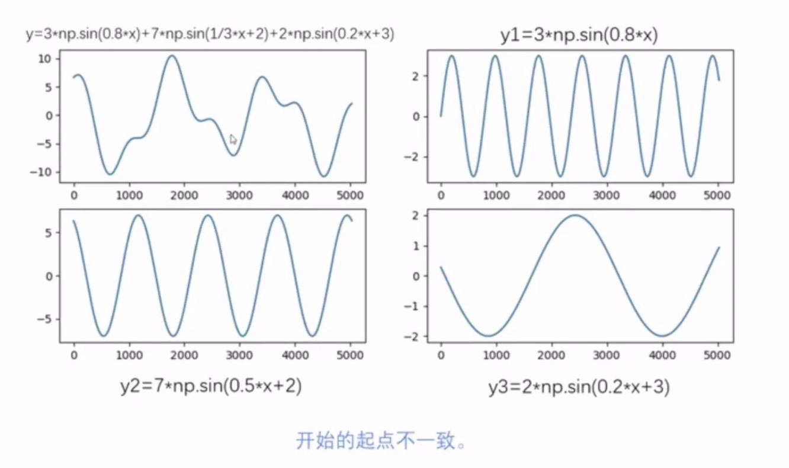
傅立叶变换在二维图像处理
傅立叶变换在二维图像处理中想法与之前一维类似，图像处理中的傅立叶变换是基于二维矩阵，如图所示，x轴和y轴共同表示图像中的位置，z轴表示每个位置（像素点）的灰度值。
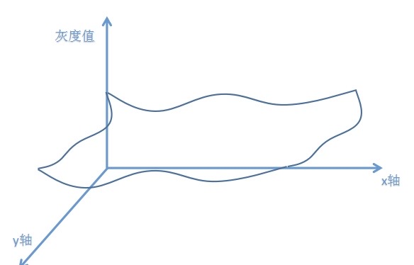
和之前的一维函数相比较可以得出对应关系：
| 一维函数 | 二维图像 |
|---|---|
| 时间 | 距离 |
| 信号强度 | 灰度值 |
傅立叶变换的特点
傅立叶变换吧图像转化成cosin和sin函数的组成
空间域——-（Fourier Transformation）——->频率域
频率域——-（Inverse Fourier Transformation）——->空间域
一副M*N大小的图像可以被看作是M*N个指数的基本图像的线形组合
傅立叶变换前后图像大小不变
在频率域上的每个幅值对应表示了在空间域上相应存在的灰度值频率。
频率域F(0, 0)中心点表示整幅图灰度值的平均值
图像DFT(离散傅立叶变换)的基本属性是其周期性和复共轭对称性。频谱以周期N在两个方向上无止境地重复，即F（u，v）= F（u + kN，v + lN）其中k，l∈[-∞，…，-1，0，1， 2，…，∞]。从具有2D DFT的N×N图像计算出的傅立叶系数F（u，v）的N×N块是此无限序列的单个周期
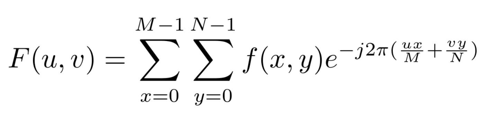
注意看这里对于频率域的每个点（u，v）都需要时间域所有点的相关信息。
二维图像中傅立叶变换的原理
二维的sin波动可以用如下公式表述：
z = a sin(ux+vy)
z是波的高度（强度）。
a是幅值，表示波的最高高度。
u是波浪在x方向上重复的次数（x方向上的频率）。
v是波浪在y方向上重复的次数（y方向上的频率）。
如图所示，当v=0的时候，sin的波只在x轴方向波动，当u=0的时候，sin的波只在y轴方向波动，如果u和v都不为0，那么就会在xy叠加方向以角度u/v波动（比如对角线方向）。
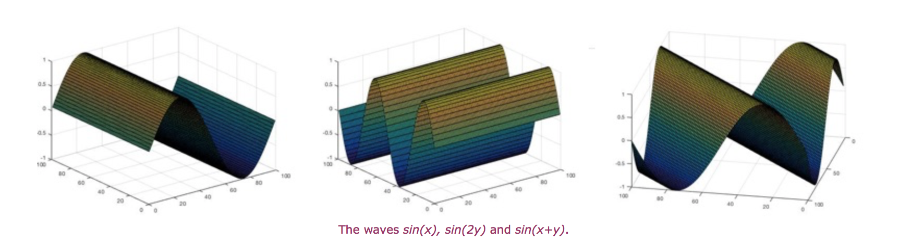
如下图，把每个像素点上述的波叠加起来，然后这些波会相互抵消，相互叠加。
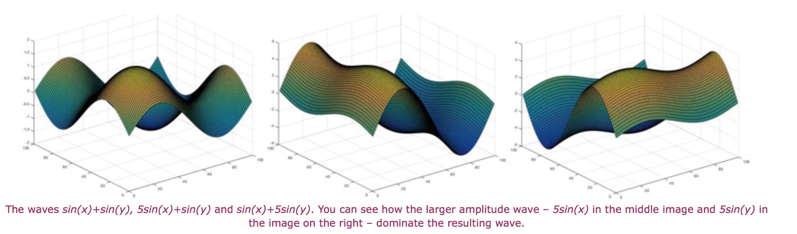
u是波浪在x方向上重复的次数（x方向上的频率），它可以是1，2，3… 1表示单位距离内在x方向上重复1次，2表示单位距离内在x方向上重复2次…
比如，f（2，2）这个像素，它的灰度值在x方向上以sin波波动了3次，在y方向上以sin波波动了4次，那么它在频率域对于点F（3，4）就有一点贡献。F（u，v）的值就是这张图内所有像素点贡献值之和，就是在那个x方向u频率和y方向的v频率的sin波动的强度大小的矢量和。F(3，4)那点的亮度就是表示了整张图的所有像素点在x方向上以频率3灰度的波动和在y方向上以频率4灰度的波动之和的强度（能量大小）。在频率域上的中心点（0，0）表示在x和y方向上都没有波动，它的值是所有灰度值和的平均值。所以在频率域中，中间是低频率，外部是高频率。
傅立叶变换如何储存变换前的位置信息
按照之前介绍的，如果在傅立叶变换之后是频率域，而频率域只有幅值的话，那么就只能用幅值来表示在变换前以各种角度的各种频率出现次数的多少。但是在图片中很可能还需要这些偏移信息，而这些信息就储存在频率域的相位谱信息中，每个频率都有自己的幅值和相位。
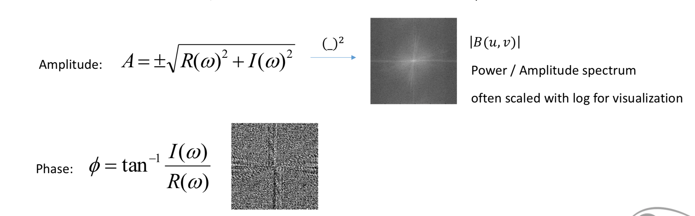
小例子
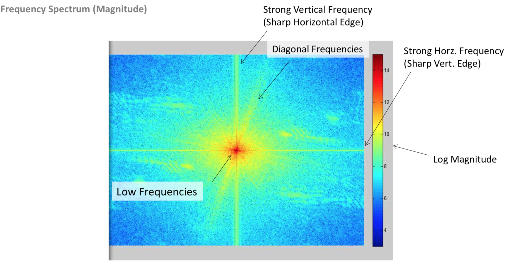
为什么在频率域上的水平直线转化到空间域是清晰的竖直的直线呢？
因为在频率域上的水平直线表示着当u（u是波浪在x方向上重复的次数（x方向上的频率））等于很多值（1，2，3…）时，v（v是波浪在y方向上重复的次数（y方向上的频率））等都于0，这意味着在空间域上灰度值在x方向上有很多各种各样的灰度值的变化，因为直线是有粗度的，粗度上的每个pixel都是一个频率，而高频的代表了是一条清晰的直线（直线的清晰度）。
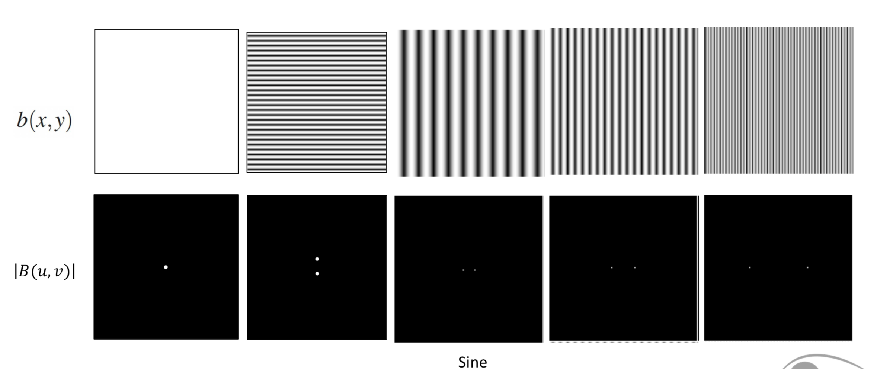
傅立叶变换在图像处理的应用
- 图像去噪，利用傅立叶变换的线形性质, 在傅立叶变换后在频率域更方便用某些filter去去噪。
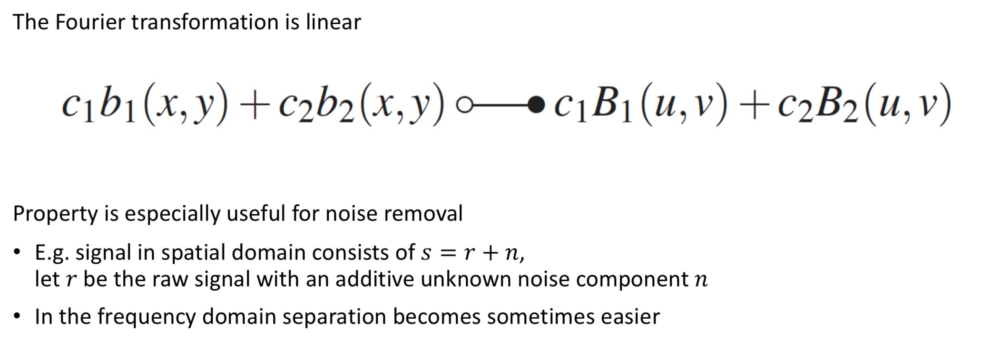
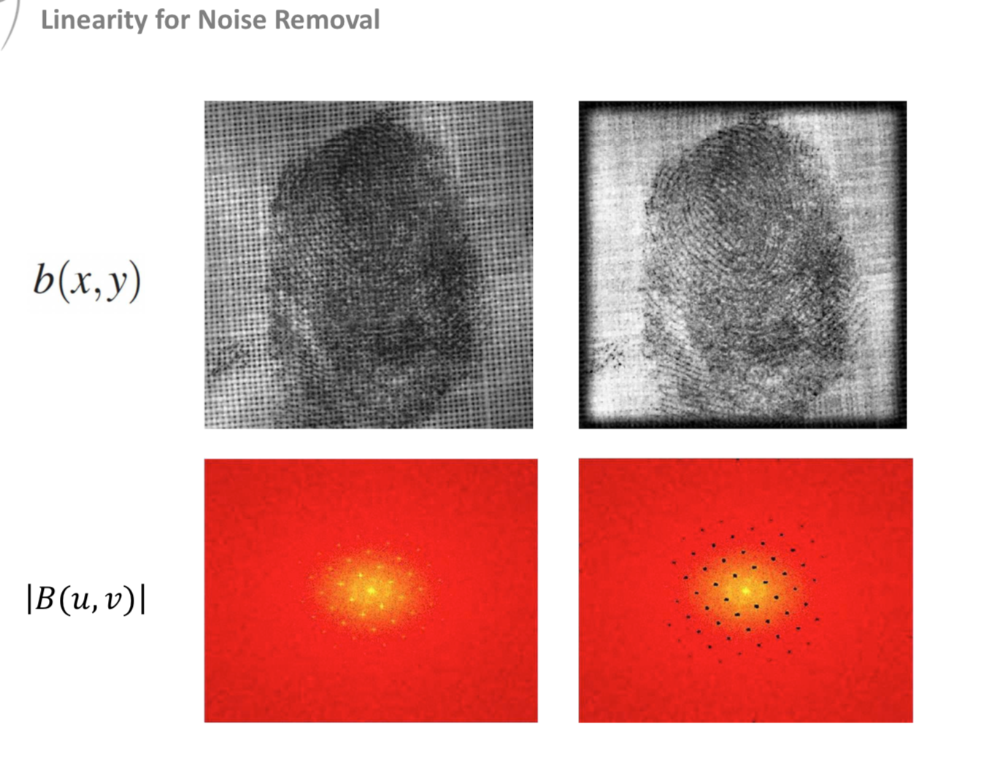
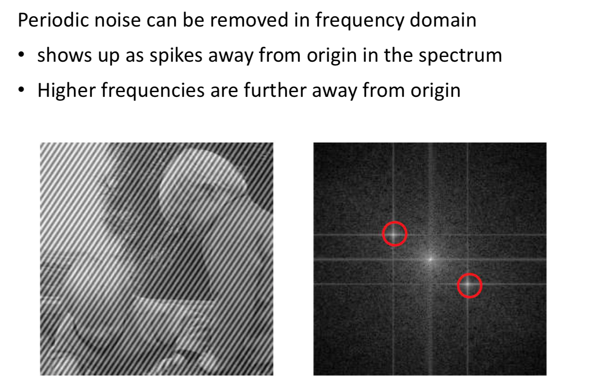
二维图像傅立叶变换在opencv中的实现
1 | import cv2 as cv |